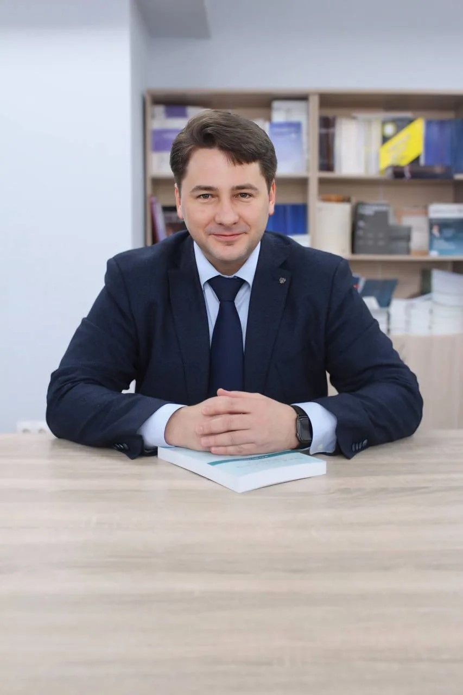

Углублённая профессиональная подготовка в рамках направления «Юриспруденция».
Кандидат юридических наук, доцент, заместитель директора Юридического института КемГУ по научной работе.

Углубленная и качественная подготовка конкурентоспособных юристов гражданско-правового профиля, обладающих высоким уровнем правовой культуры и правосознания, фундаментальными знаниями в области частного права и цивилистического процесса, осуществление научно-исследовательской деятельности в сфере цивилистики.
Профиль подготовки «Защита гражданских прав» ориентирует выпускников на углубленные знания в сфере гражданского права; семейного права; наследственного права; корпоративного права; банкротства; гражданского и арбитражного процесса; альтернативных форм разрешения споров; цифровых технологий в частном праве; градостроительного и экологического права.

Наши выпускники востребованы в ключевых сферах правоприменительной деятельности и вносят вклад в развитие правового государства.
Магистерская программа доступна в очной и заочной формах обучения.
Нормативный срок обучения
Нормативный срок обучения